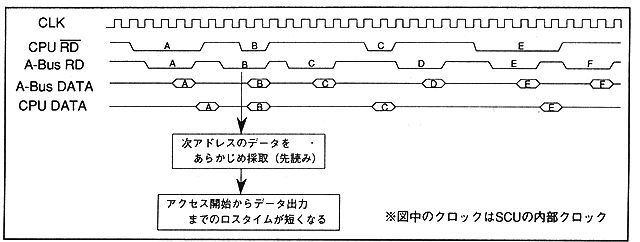

After writing data to CS0 space, you can insert the unprocessed state for 1 clock. This bit determines whether the process is enabled or disabled. 1 means valid, 0 means invalid. This bit does not affect the operation after reading the CS0 space. Figure 3.27 shows the operation when this bit is set.
Figure 3.27 Timing when setting precharge insertion bit after writing
